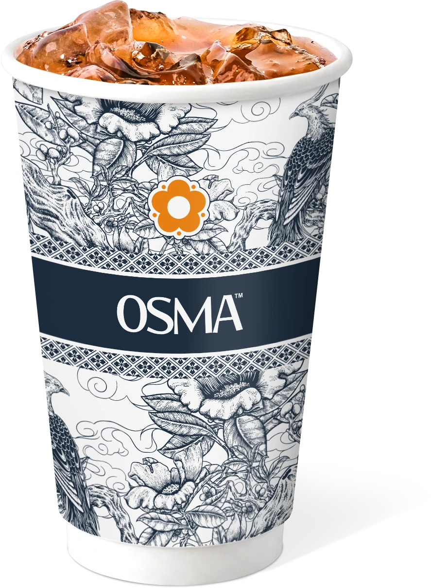

Menenangkan pikiran
Aroma floral osmanthus dikenal membantu meredakan stres dan memberi rasa tenang setelah hari yang panjang.
Osmanthus Tea · Indonesia
桂花茶 — teh bunga osmanthus yang tumbuh di lereng Guilin, diseduh dengan oolong pilihan. Lembut di tenggorokan, floral di hidung, hangat di hati.
01 Sejarah
Bunganya sekecil butir gula, namun aromanya sudah tercatat dalam puisi sejak Dinasti Tang. Inilah perjalanan osmanthus — dari lereng batu Guangxi sampai ke gelas Anda hari ini.

± 2000 tahun lalu · Lembah Guilin
Osmanthus tumbuh liar di lereng berbatu Guangxi. Bunganya hanya mekar beberapa hari setiap musim gugur, dipetik dengan tangan saat aromanya paling pekat.
Dinasti Tang & Song · Abad 7–13
Teh bunga osmanthus mulai hadir di kedai teh Tiongkok. Aromanya dianggap membawa ketenangan, disajikan untuk tamu sebagai simbol kehangatan dan penghormatan.
Warisan seduhan
Dari teh hijau hingga oolong panggang, osmanthus menjadi lapisan aroma yang menyeimbangkan rasa pahit dan manis — warisan yang dirawat dari generasi ke generasi.
Kini · Indonesia
OSMA membawa bunga, resep, dan ritualnya ke Indonesia. Setiap cup diseduh segar dengan biji teh pilihan dan bunga osmanthus asli — tanpa perasa tiruan.
02 Manfaat
Bukan hanya aroma. Setiap seduhan membawa senyawa alami yang bekerja lembut untuk tubuh dan pikiran.
Aroma floral osmanthus dikenal membantu meredakan stres dan memberi rasa tenang setelah hari yang panjang.
Polifenol dan flavonoid dari bunga serta daun teh membantu tubuh melawan radikal bebas setiap hari.
Seduhan hangat yang lembut membantu melancarkan pencernaan tanpa rasa berat di perut.
Aroma alami bunga meninggalkan kesegaran bersih di mulut — tanpa rasa manis yang menempel.
Kandungan vitamin dan sifat anti-inflamasi alami membantu menjaga daya tahan tubuh tetap prima.
Antioksidan membantu menjaga elastisitas dan kecerahan kulit dari dalam, bukan sekadar dari luar.
* Manfaat di atas bersifat umum dan berasal dari kebiasaan konsumsi teh osmanthus. Bukan pengganti saran medis.
04 Galeri
Dari pop-up pasar sampai bazaar kota, gerai-gerai OSMA selalu bertemu pelanggannya langsung — bukan lewat layar, tapi lewat gelas yang berpindah tangan.
Dokumentasi OSMA · pop-up, bazaar & gerai mitra
Bawa OSMA ke kota Anda05 Peluang Bisnis
Rasa yang baik layak tumbuh di banyak tempat. OSMA membuka kemitraan outlet untuk Anda yang ingin membangun bisnis minuman dengan produk yang benar-benar berbeda.
Diskusi singkat mengenai kota, calon lokasi, target pasar, dan paket kemitraan yang paling sesuai.
Tim kami membantu survei lokasi dan menyusun estimasi modal, operasional, serta proyeksi penjualan.
Pelatihan barista, SOP operasional, desain booth, dan pengiriman bahan baku pertama ke lokasi Anda.
Pendampingan marketing dan operasional hingga outlet berjalan stabil dan mandiri.
Ingin presentasi lengkap & simulasi modal untuk kota Anda?
Chat Tim Kemitraan06 Mulai sekarang
Kuota kemitraan dibuka terbatas per kota. Ceritakan lokasi Anda, tim kami akan menghubungi dalam 1×24 jam.